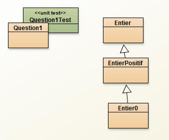
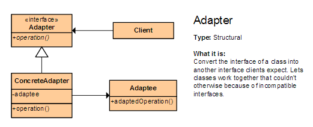
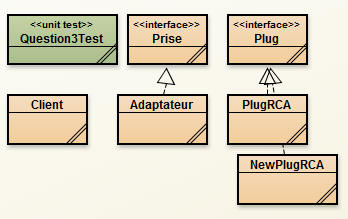
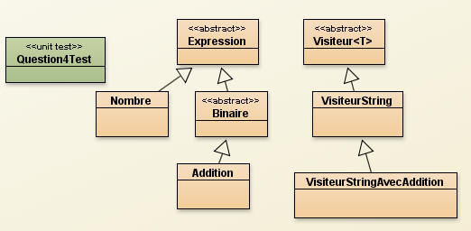

Exercices dirigés NFP121
Introspection :
- La liste des méthodes d'une classe,
- Un adaptateur et la classe à adapter issus d'un fichier de configuration,
- Le patron Visiteur re-visité.
Les classes pour la question1

La classe Question1 : la classe à compléter
Les classes Entier, EntierPositif et Entier0 fournies ci-dessous
La méthode main de la classe Question1 permet d'afficher sur la console, la liste de certaines méthodes d'une classe dont le nom est entré au clavier.
Ainsi nous souhaitons obtenir :
- La liste de toutes méthodes publiques accessibles depuis une classe,
- La liste de toutes méthodes accessibles depuis une classe,
- La liste des méthodes publiques redéfinies localement.
Par exemple: console> java Question1 EntierPositif, nous aurons sur la console
MethodesPubliquesLocalesEtHeritees public Entier EntierPositif.copie() public EntierPositif EntierPositif.copie() public java.lang.String Entier.toString() public java.lang.String Entier.toString(int) public void Entier.setValeur(int) public int Entier.getValeur() public void Entier.inc(int) public final void java.lang.Object.wait() throws java.lang.InterruptedException public final void java.lang.Object.wait(long,int) throws java.lang.InterruptedException public final native void java.lang.Object.wait(long) throws java.lang.InterruptedException public boolean java.lang.Object.equals(java.lang.Object) public native int java.lang.Object.hashCode() public final native java.lang.Class<?> java.lang.Object.getClass() public final native void java.lang.Object.notify() public final native void java.lang.Object.notifyAll() ToutesLesMethodesAccessiblesDeCetteClasse private void EntierPositif.plus1Bis() public Entier EntierPositif.copie() public EntierPositif EntierPositif.copie() LesMethodesRedefiniesLocalement public EntierPositif EntierPositif.copie()
Les classes Entier, EntierPositif et Entier0
public class Entier{
private int valeur;
public Entier(int valeur){
this.valeur = valeur;
}
public void setValeur(int valeur){
this.valeur = valeur;
}
public void inc(int inc){
this.valeur = valeur + inc;
}
private void plus(int v){
this.valeur = this.valeur + v;
}
public Entier copie(){
return new Entier(getValeur());
}
public int getValeur(){
return this.valeur;
}
public String toString(){
return Integer.toString(valeur);
}
public String toString(int base){
return Integer.toString(valeur,base);
}
int plus1(){
return valeur+1;
}
protected int moins1(){
return valeur-1;
}
}
public class EntierPositif extends Entier{
public EntierPositif(int valeur){
super(valeur);
if(valeur<0) throw new RuntimeException();
}
private void plus1Bis(){
setValeur(getValeur()+1);
}
public EntierPositif copie(){
return new EntierPositif(getValeur());
}
}
public class Entier0 extends EntierPositif{
public Entier0(){
super(0);
}
public Entier0 copie(){
return new Entier0();
}
}
QUESTION1: Compléter la classe Question1 ci-dessous, celle-ci permet d'afficher sur la console les méthodes publiques, héritées, redéfinies, etc... d'une classe. Le nom de la classe est saisi depuis la ligne de commande.
import java.lang.reflect.*;
import java.util.*;
public class Question1{
public static void main(String[] args){
try{
Class<?> cl = Class.forName(args[0]);
// https://docs.oracle.com/javase/7/docs/api/java/lang/Class.html#forName(java.lang.String)
List<Method> l = null;
l = obtenirLesMethodesPubliquesLocalesEtHeritees(cl);
afficher("MethodesPubliquesLocalesEtHeritees",l);
l = obtenirToutesLesMethodesAccessiblesDeCetteClasse(cl);
afficher("ToutesLesMethodesAccessiblesDeCetteClasse",l);
l = obtenirLesMethodesPubliquesRedefiniesLocalement(cl);
afficher("LesMethodesPubliquesRedefiniesLocalement",l);
}catch(ExceptionInInitializerError e){
System.out.println("Exception: the initialization provoked by this method fails");
}catch(LinkageError e){
System.out.println("Exception: the linkage fails");
}catch(ClassNotFoundException e){
System.out.println("Exception: the class cannot be located");
}
}
private static void afficher(String titre, List<Method> list){
System.out.println(titre);
for( Method m : list){
System.out.println(m.toGenericString());
}
System.out.println();
}
public static List<Method> obtenirLesMethodesPubliquesLocalesEtHeritees(Class<?> cl){
return null; // à compléter, cf. Arrays.asList
}
public static List<Method> obtenirToutesLesMethodesAccessiblesDeCetteClasse(Class<?> cl){
return null; // à compléter
}
public static List<Method> obtenirLesMethodesPubliquesRedefiniesLocalement(Class<?> cl){
return null; // à compléter
}
// ------- methodes non vérifiées --------
private static boolean contient(List<Method> list, Method m){
for( Method ms : list){
if ((ms.getName().equals(m.getName())) && // meme nom
// modifier compatible ? a voir
//(m.getModifiers()==Modifier.PUBLIC) &&
sameParameterType(ms,m) && // meme parametres
sameReturnTypeWithCovariance(ms,m) // meme type de retour incluant la covariance
//(ms.getReturnType()==m.getReturnType())
)
return true;
}
return false;
}
private static boolean sameParameterType(Method me, Method m){
Class<?>[] paramsMe = me.getParameterTypes();
Class<?>[] paramsM = m.getParameterTypes();
if(paramsMe.length != paramsM.length) return false;
for(int i = 0; i< paramsMe.length; i++){
if(paramsMe[i] != paramsM[i]) return false;
}
return true;
}
private static boolean sameReturnTypeWithCovariance(Method ms, Method m){
// à compléter
return false;
}
private static boolean sameReturnType(Method ms, Method m){
return ms.getReturnType() == m.getReturnType();
}
// ------- methodes pour les tests --------
public boolean equals(Object obj){
return false;
}
public int hashCode(){
return 0;
}
@Override
public Object clone(){
return null;
}
// ------- methodes utilitaires, cf. dont certaines sont extraites du web --------
private static String methodName(){
// http://stackoverflow.com/questions/4065518/java-how-to-get-the-caller-function-name
StackTraceElement[] stacktrace = Thread.currentThread().getStackTrace();
StackTraceElement e = stacktrace[2];//maybe this number needs to be corrected
return e.getMethodName();
}
}
QUESTION2: Lire les diapositives 39 et 40, tester le code de la diapositive 53 ci-dessous
http://jfod.cnam.fr/NFP121/supports/extras_NFP121_Junit3_Tests_Unitaires.pdf
/** Obtention de l'affichage produit par l'exécution de la méthode main d'une classe.
* @param className le nom de la classe
* @param args les arguments de la ligne de commande
* @return le texte en tableau de lignes
* @throws une exception est levée si la classe est inconnue
*/
public static String[] execStatic(String className, Object... args) throws Exception{
java.io.PrintStream out = System.out;
String[] consoleOut = null; // ou new String[]{""};
try{
java.io.ByteArrayOutputStream baos = new java.io.ByteArrayOutputStream();
java.io.PrintStream ps = new java.io.PrintStream(baos);
Class<?> c = Class.forName(className);
System.setOut(ps);
c.getMethod("main",String[].class).invoke(null, new Object[]{args});
consoleOut = baos.toString().split(System.getProperty("line.separator"));
}finally{
System.setOut(out);
}
return consoleOut;
}
QUESTION3: Le patron Adaptateur, son instance est issue d'un fichier de configuration cf. le cours 03_02

La construction d'un adaptateur nécessite de transmettre une instance de la classe à adapter, cf. diapositives 40 à 43 de http://jfod.cnam.fr/NFP121/supports/NFP121_cours_03_2_introduction_aux_patrons.pdf,
Nous souhaitons remplacer cette configuration en langage Java par une configuration issue d'un fichier texte, configuration que l'utilisateur peut modifier à loisirs, et surtout sans qu'il soit nécessaire de faire appel au compilateur java, un simple éditeur de texte fera l'affaire...

En Java, l'utilisateur Java doit créer un adaptateur en transmettant une instance de la classe à adapter,
Prise prise = new Adaptateur(new PlugRCA());
nous souhaitons remplacer la ligne ci-desus par
Prise prise = (Prise)Configuration.genererAdaptateur("nomDuFichier.txt");
A la place l'utilisateur précise simplement un nom de fichier de type texte dans lequel sont précisés :
- le nom de la classe de l'adaptateur
- le nom de la classe à adapter
Le fichier de configuration contient au moins ces deux lignes :
classe_adaptateur=Adaptateur
classe_a_adapter=PlugRCALe résultat obtenu est le même que l'exécution de Prise prise = new Adaptateur(new PlugRCA());
Si l'utilisateur souhaite changer de classes, il suffit simplement qu'il effectue une modification du fichier texte. Exemple un changement de la classe à adapter s'effectue en modifiant la 2ème ligne
classe_adaptateur=Adaptateur
classe_a_adapter=NewPlugRCALe résultat obtenu est le même que l'exécution de Prise prise = new Adaptateur(new NewPlugRCA());
Le client devient:
public class Client{ public static void main(String[] args) throws Exception{ //String nomDuFichier = "config.props"; String nomDuFichier = "README.TXT"; // accès direct depuis bluej, icône document en haut à gauche Prise prise = (Prise)Configuration.genererAdaptateur(nomDuFichier); prise.péritel(); } }La lecture d'un fichier texte de ce type s'effectue à l'aide des méthodes issues de la classe Properties. Ce sont des méthodes de lecture de couples (clef,valeur) toutes prêtes, les clefs sont uniques, la valeur est précisée sur la même ligne après le symbole '=', ce sont des "String", en exemple:
clef=valeur
classe_adaptateur=Adaptateur
classe_a_adapter=PlugRCAimport java.util.*; import java.io.*; import java.lang.reflect.*; public class Configuration{ public static Object genererAdaptateur(String nomDuFichier) throws Exception{ Properties props = new Properties(); props.load(new FileInputStream(new File(nomDuFichier)));// lecture de la valeur associée à la propriété classe_adaptateur String adaptateurClassName = props.getProperty("classe_adaptateur"); String adaptateeClassName = props.getProperty("classe_a_adapter");// à compléterObject adaptateur = null; return adaptateur; } }
Les classes de l'exemple issues du cours
public interface Prise{
void peritel();
}
------------------------------------------------------
public class Adaptateur implements Prise{
public Plug adaptee;
public Adaptateur(Plug adaptee){
this.adaptee = adaptee;
}
public void peritel(){
adapté.RCA();
}
}
------------------------------------------------------
public interface Plug{
void RCA();
}
------------------------------------------------------
public class PlugRCA implements Plug{
public void RCA(){
System.out.println("Plug RCA");
}
}
------------------------------------------------------
public class NewPlugRCA implements Plug{
public void RCA(){
System.out.println("New Plug RCA");
}
}
Complétez la classe Configuration, proposez un nouvel adaptateur et une nouvelle implémentation de l'interface Prise
La classe de Test qui pourrait aisément être complétée ...
import java.io.*;
import java.util.*;
import java.lang.reflect.*;
public class Question3Test extends junit.framework.TestCase{
public static class PriseFactice implements Plug{
private static int nombre;
public void RCA(){
nombre++;
}
public static int getNombre(){
return nombre;
}
}
public void testNouvellePriseRCA(){
try{
PrintWriter writer = new PrintWriter("configTest.txt", "UTF-8");
writer.println("classe_adaptateur=Adaptateur");
writer.println("classe_a_adapter=Question3Test$PriseFactice");
writer.close();
}catch (Exception e) {
fail(e.getMessage());
}
try{
Prise prise = (Prise)Configuration.genererAdaptateur("configTest.txt");
assertNotNull(prise);
prise.peritel();
assertEquals(1, PriseFactice.getNombre());
}catch(Exception e) {
fail(e.getMessage());
}
}
}
QUESTION4: Le patron Visiteur, revisité, reprendre l'exemple du cours

La critique sur l'usage de ce patron réside dans le fait qu'une nouvelle feuille concrète du composite engendre la modification de tous les visiteurs préalablement créés, ce qui peut s'avérer fastidieux.
cf. les transparents du cours, vérifiez cet exemple
public abstract class Expression{
public <T> T accepter(Visiteur<T> v){
return v.visite(this);
}
}
------------------------------------------------------
public class Nombre extends Expression{
private int valeur;
public Nombre(int valeur){
this.valeur = valeur;
}
public int getValeur(){
return valeur;
}
}
------------------------------------------------------
public abstract class Binaire extends Expression{
private Expression op1, op2;
public Binaire(Expression op1, Expression op2){
this.op1 = op1;
this.op2 = op2;
}
public Expression getOp1(){ return op1;}
public Expression getOp2(){ return op2;}
}
------------------------------------------------------
public class Addition extends Binaire{
public Addition(Expression op1, Expression op2){
super(op1, op2);
}
}
------------------------------------------------------
import java.lang.reflect.*;
public abstract class Visiteur<T>{
public T visite(Expression expr){
Class<?> cl = this.getClass();
while(cl != Object.class){
try{
Method m = cl.getDeclaredMethod("visite",expr.getClass());
return (T)m.invoke(this, expr);
}catch(Exception e){
cl = cl.getSuperclass();
}
}
throw new UnsupportedOperationException();
}
}
------------------------------------------------------
public class VisiteurString extends Visiteur<String>{
public String visite(Nombre n){
return Integer.toString(n.getValeur());
}
}
------------------------------------------------------
public class VisiteurStringAvecAddition extends VisiteurString{
public String visite(Addition a){
return "(" + a.getOp1().accepter(this) + " + " + a.getOp2().accepter(this) + ")";
}
}
import java.io.*;
import java.util.*;
import java.lang.reflect.*;
public class Question4Test extends junit.framework.TestCase{
public void testVisiteurNombre(){
Expression n = new Nombre(33);
Visiteur<String> v = new VisiteurString();
assertEquals("33", n.accepter(v));
}
public void testVisiteurAddition(){
Expression a = new Addition(new Nombre(33),new Nombre(2));
Visiteur<String> v = new VisiteurStringAvecAddition();
assertEquals("(33 + 2)", a.accepter(v));
}
}
bibliographie : http://www.javaworld.com/article/2077602/learn-java/java-tip-98--reflect-on-the-visitor-design-pattern.html
Ajoutez une nouvelle classe concrète comme la Soustraction ...
/* Une idée...